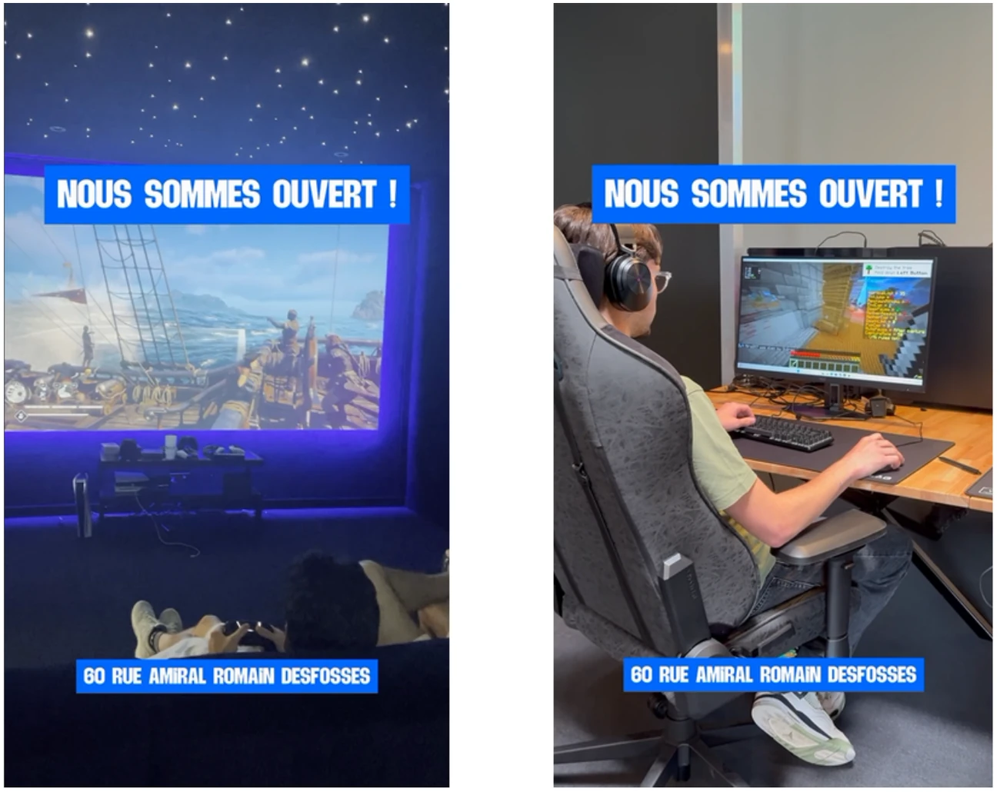
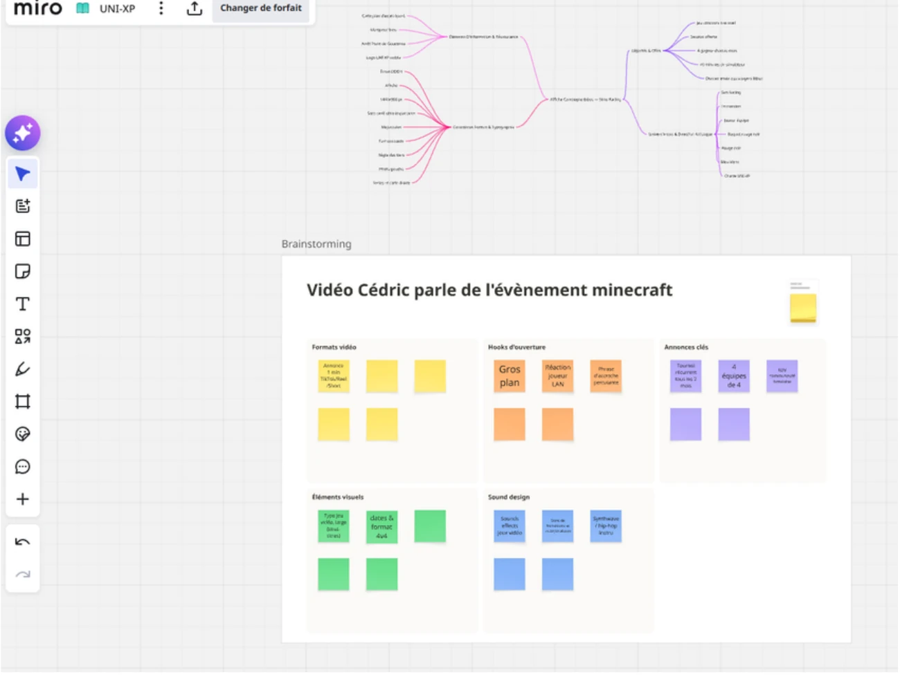
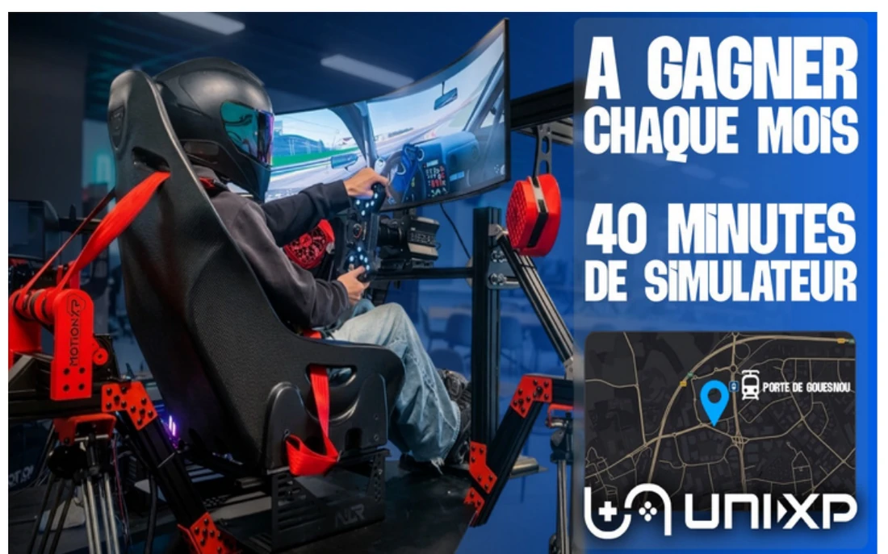
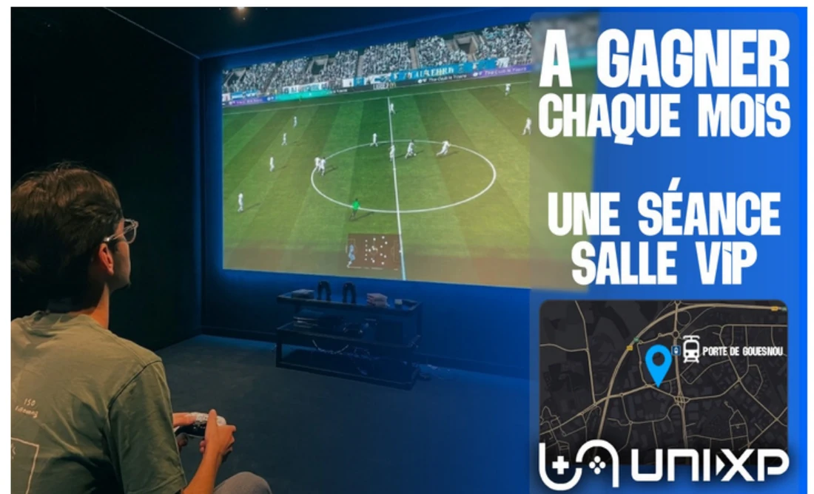
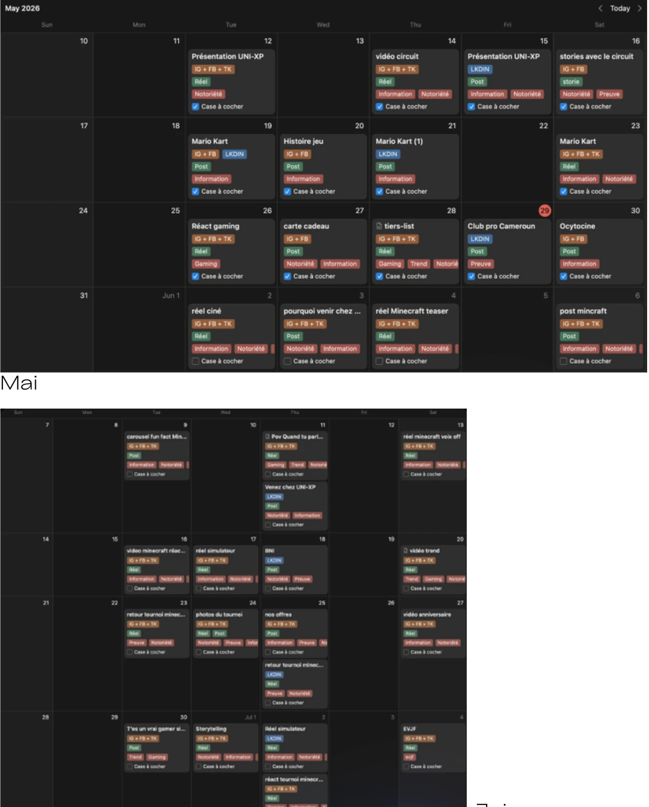
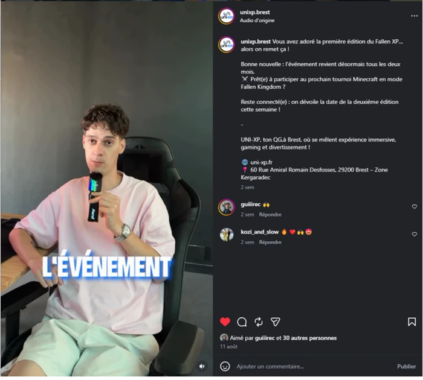
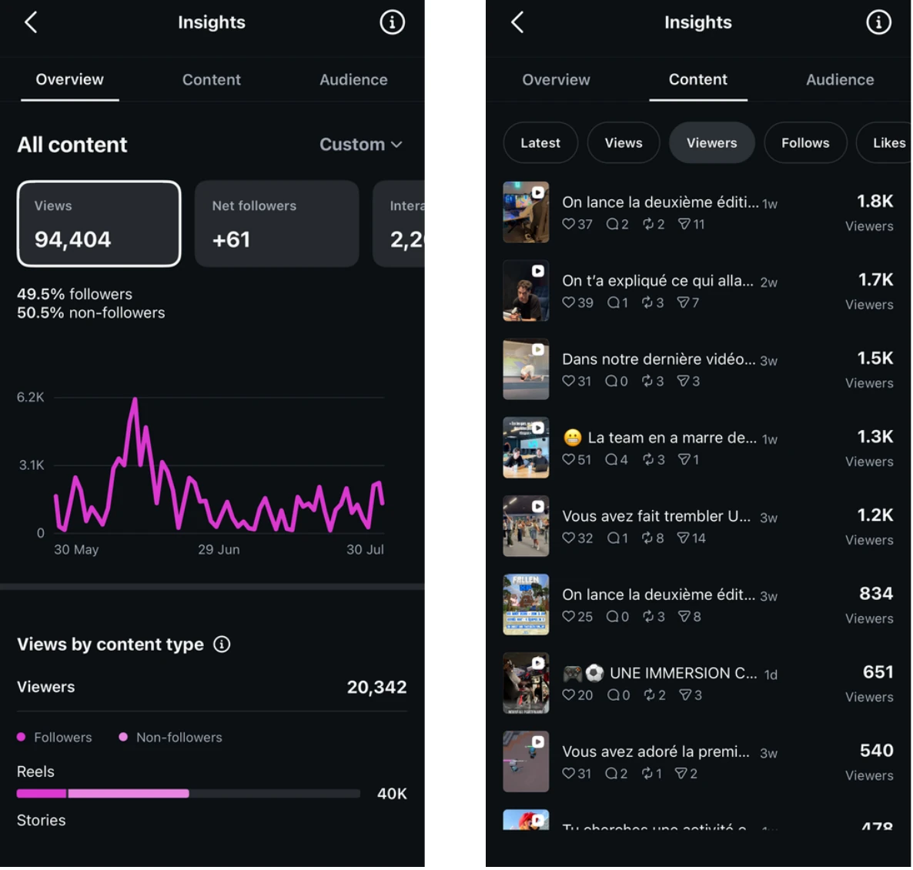

UNI-XP est un lieu innovant, unique et immersif dédié au jeu vidéo, inauguré en décembre 2025 à Brest. L'établissement combine zones LAN, simulateurs de course (Sim Racing) et un cinéma privatif (salle V.I.P), pour une expérience collective et mémorable accessible aux joueurs passionnés comme au grand public.
Ma mission, en tant que stagiaire communication : accompagner le lancement de l'activité par une communication digitale ambitieuse, en phase de post-ouverture.

UNI-XP fait face à un marché du gaming en pleine expansion (40 millions de pratiquants en France) mais à une notoriété encore limitée à l'échelle de l'agglomération brestoise, malgré un ancrage local solide dans les réseaux d'affaires (BNI, Biz'h).
L'objectif : accroître la visibilité, générer du trafic physique en salle, et structurer une communauté active en ligne comme hors ligne pour pérenniser le modèle économique de cette niche de marché.
Analyse concurrentielle, benchmark et matrice SWOT ont posé les bases de la stratégie avant toute création.

Pour donner à UNI-XP une image professionnelle sur Twitch, j'ai conçu de A à Z l'overlay de diffusion en direct des tournois, sur Affinity Designer puis Adobe Illustrator : règles du jeu, partenaires et agenda des évènements intégrés à l'habillage.
Le même travail graphique a servi à la création d'affiches de communication (Sim Racing, salle V.I.P) et de supports d'affichage pour le lieu.
De la première maquette à son intégration en direct pendant un tournoi Minecraft — cliquez pour comparer.


Affiches B-Klub déclinées du même univers graphique — Sim Racing et salle V.I.P.
Avec la responsable de communication, j'ai structuré un calendrier éditorial sur deux mois : brainstorming et mindmaps sur Miro, planification des publications Instagram/TikTok, tournage et montage de contenus courts (Reels) pour annoncer les évènements et animer le quotidien du lieu.

Le projet phare de mon stage : la création d'un tournoi Minecraft grand public, FallenXP, pensé pour toucher à la fois le public sur place et une audience à distance en streaming. J'ai produit l'overlay du live, participé à la promotion sur les réseaux et diffusé les temps forts sur TikTok et Instagram.

Le suivi des statistiques Instagram (vues, taux d'ouverture, clics) m'a permis d'ajuster le calendrier éditorial en continu. Les retours qualitatifs, collectés directement sur Discord, ont confirmé la perception d'UNI-XP comme un acteur esport crédible, technique et proche de sa communauté.

Ce stage m'a permis de mobiliser l'ensemble des compétences du bloc communication : veille concurrentielle, réflexion stratégique autour du positionnement de marque, brainstorming créatif, conception graphique, et gestion de projet dans le respect de contraintes techniques et temporelles. Les échanges réguliers avec l'annonceur ont aussi renforcé ma capacité à présenter et argumenter des choix de communication de manière professionnelle — évaluée « très bien » sur l'ensemble des critères par mon tuteur d'entreprise.